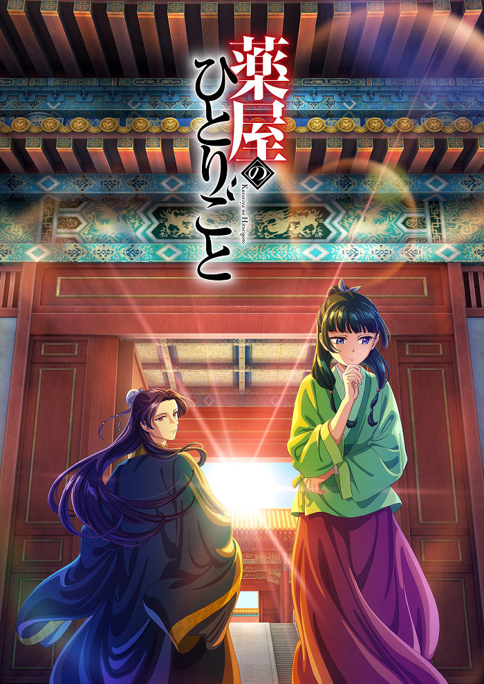

Монолог фармацевта
Маомао оказывается при императорском дворе и раскрывает опасные тайны благодаря знаниям о лекарствах и ядах.
Не знаете, с чего начать? Доверьтесь случайному подбору и откройте для себя новое аниме. А если хочется чего-то определённого, настройте фильтры по жанру, типу, настроению и длительности.

Маомао оказывается при императорском дворе и раскрывает опасные тайны благодаря знаниям о лекарствах и ядах.